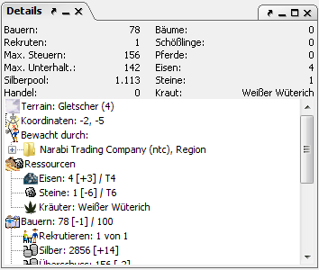

Der Detaildialog ist die wohl wichtigste Informationsquelle in Magellan. Hier werden Details zu den gerade aktiven Objekten angezeigt.

Im oberen Bereich werden permanent die wichtigsten Daten einer Region dargestellt, in der sich das gerade aktive Objekt befindet. Hierzu gehören: Bauernanzahl, maximal mögliche Rekruten, Verdienst der Bauern (Steuern), Unterhaltungslimit, Poolsilber (Silber aller Parteien mit gesetzem Passwort), Handelsvolumen, Bäume, Pferde, und Eisen/Laen so vorhanden. Die Informationen im unteren Bereich ändern sich je nach aktiviertem Objekt und sind ebenfalls in einer Baumstruktur angelegt, so dass sich die Informationen einfach ausblenden lassen.
Je nach dem was für ein Objekt gerade gewählt ist, zeigt die Detailanzeige unterschiedliche Daten an.
Insel: keine Informationen.
Region: Alle Regionsinformationen sowie die bewachenden Parteien, liegen Informationen aus einem vorherigen Report vor, so werden die Änderungen gegenüber diesem ebenfalls angezeigt. Mit einem Rechtklick auf das Detailpanel, erscheint ein Kontextmenü mit dem man Kommentare zu der Region schreiben kann (Hoheitsrechte, etc.). Diese Kommentare können später einfach per Rechtsklick geändert, gelöscht oder erweitert werden.
Partei: Regionszusammenfassungen aller bekannten Daten dieser Partei, unterteilt in die Kategorien, Waffen, Rüstungen, Resourcen (Rohstoffen), Luxusgüter, Kräuter, Tränke, Sonstiges und Talentwerte. Auch bei Parteien besteht die Möglichkeit per Rechtsklick Kommentare anzulegen.
Schiffe: Beladung (soweit bekannt), Zugehörigkeit und Kapitän sowie der Einheiten, die sich auf ihm befinden. Auch zu Schiffen kann man per Rechtsklick Kommentare anlegen.
Gebäude: Besitzer, Größe, Insassen sowie nötige Unterhaltungskosten. Auch hier gibt es die Kommentarfunktion.
Straße: Richtung und Status der Fertigstellung
Einheit: Hier werden alle Daten zu der gerade aktiven Einheit angezeigt. Hierzu gehören auch Beladung, freie Kapazität bei Bewegung, Gegenstände, Lerntage und Talentstufe. Ebenso werden Lehrer- und Schülereinheiten angezeigt. Werte in runden Klammern zeigen bei Übergaben die Anzahl der Gegenstände/Personen/Lerntage in der nächsten Runde an. Ist es nicht möglich diesen Wert mit Sicherheit vorherzusagen so wird ein Fragezeichen gesetzt. Lehrt die aktuelle Einheit andere Einheiten, können mit Rechtsklick auf den "Lehrer"-Knoten die Befehle aller Schülereinheiten bestätigt werden.
Ist die aktive Einheit ein Magier, werden auch die bekannten Zaubersprüche gelistet. Mit Klick auf einen Zauber kann man sich die Spruchbeschreibung anzeigen lassen. Dazu muß die Spruchbeschreibung allerdings im CR gespeichert sein. Wenn das noch nicht der Fall ist, können die Spruchbeschreibungen mit dem Befehl ZEIGE ALLE ZAUBER beim Server angefordert werden. In der folgenden Runde liegen sie dann vor. Mit Zurück kommt man wieder zurück zur Einheit.
Alle in der Detailanzeige gelisteten Einheiten (Lehrer, Schüler, Insassen) lassen sich mit einem Mausklick zu der aktiven Einheit machen, so ist es z.B. relativ einfach möglich von einer Schüler- zu der entsprechenden Lehrereinheit zu springen.